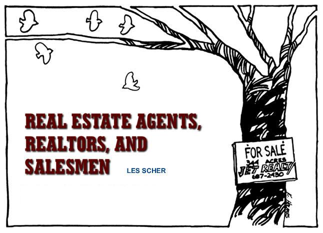

If you're looking to buy land in the country, finding the right real estate agent can be tricky. Which is why Les Scher has written Real Estate Agents, Realtors, and Salesmen to help you separate good agents from bad apples and deal with the latter. Check out this excerpt from Real Estate Agents, Realtors, and Salesmen, (Macmillan Publishing Co., Inc., 1974).
A person who is licensed by the state to sell land will be either a real estate "agent" or "broker," a "realtor," or a real estate "salesman." The terms "agent" and "broker" are used interchangeably.
States generally require that a person aspiring to become a real estate agent serve as an apprentice to an already licensed agent for a specified period of time, that he take a few college courses, and that he pass an examination on basic real estate law. However, brokerage laws are not very detailed, and licenses are easy to obtain. The real estate agent acts as a middleman throughout the negotiations between you and the owner who is selling his land. For example, if you want to make an offer to buy some land, you will give your offer to the broker to deliver to the seller. The seller then gives his response to the agent, who delivers it to you. The agent cannot legally refuse to inform the seller of any facts involving a possible sale, even if the amount of money or terms you offer seem outrageous. Usually an agent can accept a deposit from you on behalf of the owner, although he rarely has the power to actually accept your offer and sign a final Contract of Sale on the seller's behalf. Some states permit real estate agents to write certain documents, such as Deposit Receipts and Contracts of Sale, although many areas consider contract drafting to be an illegal practicing of law.
In an attempt to create an, aura of "professionalism" for the land-selling industry, the National Association of Real Estate Boards (NAREB), consisting of 1,500 local boards, established a code of ethics by which its members swear to abide. A "realtor" is any real estate agent who has been accepted as a member into one of the local real estate boards. In my experience, realtors generally seem more anxious than the average real estate agent to comply with state and local real estate laws. Because of the extra status they enjoy, they are usually cautious to avoid doing anything that would cause them to lose their membership in NAREB. An agent or salesman working under a realtor is kept under close supervision by that realtor. Although you will encounter few realtors in small towns, you can always identify an agent who is a realtor by a sign in his window displaying the round emblem and initials of NAREB.
To become a real estate salesman only requires passing a very simple examination. No apprenticeship is required and no experience is necessary. For this reason, most people you will meet selling land will be salesmen. Salesmen must work under a licensed real estate agent and can show land only under the agent's authority. A salesman cannot sign any documents or receive any money in his own name, but he can do so in the agent's name. The average salesman knows very little about land, real estate laws or the property he is showing. His knowledge about the parcels he is instructed to show comes solely from his employer, the real estate agent. Although an agent is legally responsible for the acts and words of his salesman, some agents deliberately misinform their salesmen so as to mislead potential buyers.
The following story is an excellent example of how a salesman can be used by an agent for the purpose of defrauding a purchaser. I know the principals involved in this case and saw how the buyer was taken. A salesman convinced a buyer to purchase some land by assuring him that a beautiful creek ran across the property. The buyer, without double-checking anything the salesman told him, signed a contract, paid the purchase price, and had his deed recorded. Then he decided to get a survey done before beginning to build his house to be sure that it would be on the property. He should have demanded that a survey be taken before he bought the land. The survey showed, to the buyer's surprise, that the creek was not on his property. Since the land was worthless without water from the creek, he went to the former owner to try to get his money back but was unsuccessful. The former owner had never promised him that the creek was on the property and, in fact, had never even met him. The buyer then tried to locate the salesman, but he had since left the agent's employment. The agent claimed he had never told his salesman that the creek was on the property. But he did admit that when the salesman asked if the creek was on the property, he said that he thought it might be but that he could not be sure without a survey. Getting nowhere, the buyer then filed a complaint with the District Attorney against the salesman and real estate agent for land fraud. The District Attorney found the salesman and brought him in for questioning, at which time he stated that the agent did tell him the creek was on the land and that he knew nothing about the property other than what he had been told by the agent. In rural areas, close ties develop among politicians, businessmen and law enforcers. Therefore, it was no surprise that the District Attorney refused to take any action, whitewashing the fraud for lack of evidence; after all, the buyer had nothing in writing to prove he had been told the creek came with the land. The buyer then retained a lawyer to sue the parties involved, but the outcome is uncertain. The only sure thing is that the buyer did not get what he paid for, and will have to pay much more in legal fees to try to get his money back, with no assurance of success.
When a salesman misinforms a buyer, by the time the buyer realizes something is wrong, the salesman is often long gone. There is a huge turnover in salesmen because the requirements are so easy and because many people become salesmen in order to find a good deal on a piece of land and then drop out of selling. Few salesmen are paid a regular salary. Usually they get a fraction of the agent's commission for a sale they work on, so there is little incentive to work regularly and they come and go as they please. Unless a salesman intends to apply for a license to become a real estate agent, there is no pressure on him to be well informed or particularly honest. Though a buyer who has been defrauded can always sue the seller, the agent and the salesman, going to court is easier said than done.
Even if you are positive that you have the law on your side and that you will have no problem proving your case, you still have to hire an attorney, pay court costs, and follow through with a lengthy and costly litigation. And if the defendant agrees to settle the matter out of court, you will still have legal fees to pay. In many areas, the courts are jammed with cases and a year or two may pass before you can even get into court. If you don't have evidence in writing, you will have a difficult time proving your case.
Never depend on your ability to bring a successful case against someone should he defraud you. Your goal is to investigate the property so thoroughly before you buy that you will not have any reason to bring a court action later. As a safety factor, make sure your Contract of Sale specifies all the terms and conditions of the deal so that you will have a good case if those terms are not met.
A basic fact to remember when dealing with the real estate agent is that he is working for the seller.* Although he is a middleman, he is not an independent person who simply tries to find a buyer for a piece of property. Usually the seller has signed a form of Listing Contract, making the agent an "employee," and when the agent finds an acceptable buyer the seller will pay him a commission. Thus the agent is directly responsible, an owes complete loyalty, to the seller. Since the agent's commission is based on a percentage of the selling price, it is in his interest to get the highest price possible for the land. Commissions usually start at 6 percent of the selling price and often go as high as 10 percent.
A seller usually gives his property to an agent under one of the following common types of Listing Contracts. The most desirable contract for an agent is an "exclusive right to sell" the property, which means that he is the only person allowed to sell the land during the period the contract is in force. No other agent can show the land, and if the seller finds a buyer on his own, a commission must still be paid to the agent under contract.
Under an "exclusive agency" contract, no other agent can show the land, but the seller reserves the right to sell the land himself without being obligated to pay a commission to the agent.
The third type of contract is the "open listing," in which the seller will list his land with several different brokers. The first one to find a satisfactory buyer gets the commission. The seller can also sell the land himself and not pay anyone a commission. Most brokers dislike this type of listing and will only show open-listed land after showing their exclusive listings.
If you see land that is listed by several brokers under an open listing, you can choose the broker you like best or you can locate the seller and buy directly from him. The agent who is named on a "For Sale" sign on a piece of property does not necessarily have an "exclusive right to sell" the land. If the sign does not state that the agent has an "exclusive right to sell," you should contact the owner first because if you buy directly from him you can save the amount of the commission.
Since most sellers figure the price of the commission into their asking price in order to pass the expense on to the buyer, if you do not buy through an agent you can use that fact when bargaining to get the price reduced. If a broker shows you the land and then you go and deal directly with the seller, the broker might claim he is responsible for making the sale and may ask for a commission. However, a broker is not usually given credit for a sale unless he gets the buyer to sign the Contract of Sale or give a deposit.
Many sellers of rural land, particularly if it is underdeveloped or used only as a second home, will not live in the area. But you can identify the parcel on a map and go to the Tax Assessor's office to obtain the owner's name and address.
*I will refer to the owner of land as the seller and the person who sells his land for him as the broker or real estate agent. It is implied that the "agent " could be a realtor or a salesman.
An agent makes money only if he sells some property, and competition for listings in rural areas is extremely tough. Most real estate agents will take any listing they can get, regardless of the condition of the property. It might be lacking in adequate water, legal access rights, well-drained soil or other features of good land, but that won't stop an agent from taking the listing. He has nothing to lose by trying to sell such land. Eventually someone will buy it.
The agent is not going to mention the bad points of a piece of property. Only by asking the right questions and demanding specific answers do you stand any chance of learning the true facts. Don't be satisfied with equivocal statements, such as "I think so," "I don't think there's been a problem in the past," or "Nobody can make a guarantee about that in this area." This type of statement is meaningless. The ancient rule of caveat emptor (let the buyer beware) applies: It is up to you to clarify all the facts of the situation. By giving an equivocal answer to a question, the agent is not committing himself to anything. Even if he makes a definite statement, unless you get it in writing, it is worthless. You must receive more than equivocal, worthless statements when preparing to lay down thousands of dollars.
Never buy land on the agent's promise or assurance that a problem can be worked out after the deal is closed. For example, if you are supposed to share a well with adjoining landowners but no agreement has been drawn up as to what the arrangement will be, the agent might tell you that your neighbors are great people and that you will have no problem working out an arrangement after you buy the land. This is a common and dangerous sales hustling technique. Once you pay your money and take title, the agent is out of the picture. If your neighbors don't turn out to be so nice, you can be in real trouble. Don't assume the agent is going to help you with problems once he gets his commission. If he can't arrange all the details in writing before you buy the land, he certainly won't do so afterwards.
"I'll let you in on a secret about the seller."
"I'm going to show you something nobody else has seen."
"The land is really worth more than the seller is asking."
"So far, nobody else has seen this property."
"If I had the money, I'd buy this piece myself."
"Look, a lot of people are interested in this property, so you better make up your mind quickly."
After dealing with countless real estate agents I have found two standard psychological approaches used in selling country property. The first I call the "Welcome to the country, smile, and don't worry about a thing" approach and the second is the "Why are you trying to complicate the deal by asking all those questions?" approach.
The rural land dealer exudes this attitude. The first thing you notice is his informal, unbusinesslike appearance. But don't let the absence of a necktie mislead you into thinking he is necessarily more "down-home" and honest than slick, high-pressure city agents. Coming from the city, you will be easily soothed by the country vibrations. The agent will try to make you feel completely at ease and will assure you he can help you find a nice piece of land. If he can convince you that he has nothing but your interests in mind, he hopes that you won't question anything he tells you.
An interesting new touch to the land sales business is the use of young "hip" salesmen employed by many brokers to "relate to" young people who come in looking for land. They have long hair and some will try to get you stoned, with the expectation that then you will automatically trust them. Be extremely careful of these "house hippies." The worst land I have seen was shown to me by "hip" young salesmen who knew absolutely nothing about real estate.
Similar tactics are used on a larger scale by developers who fly customers to their subdivisions for the weekend, provide free meals and drinks, let them ride horses and go swimming, and then make a big sales pitch. These sales gimmicks are part of the same approach, which could also be called "buttering up the buyer."
This approach is extremely effective, particularly when used with buyers who know little about what they are doing. Nobody wants to sound stupid. Thus when a buyer asks too many questions, the real estate agent gives him a look that implies: "What's the matter, are you stupid or something?" Agents dislike anyone who asks a lot of questions, especially lawyers who "complicate deals with all kinds of trivial conditions." The broker would have you believe that buying land is simply a process of finding a parcel that looks good to you and paying your money. The rest is just "paperwork." This is exemplified by the common statement made by brokers that the Deposit Receipt is just a receipt for some money and only one of many forms the buyer will get. Little does the buyer know that once the Deposit Receipt is signed by both parties, it becomes the binding contract for the land purchase.
An experienced agent knows very quickly whether a buyer is going to be an "easy sale." He bases his judgment on how much knowledge you appear to have about real estate, how much money you intend to spend, and whether you have "buyer's fever." Thus, when a buyer starts asking questions about extremely important legal matters, such as title insurance, easements, water rights, building permits, and financing, the broker passes them off as if they are merely secondary to the deal. They are secondary to the broker. His goal is to sell the land. He cannot get a commission, regardless of how large or small, unless he sells the property. Anything that delays the sale, he will avoid. For example, if you ask to have the land surveyed or to be shown the wording of easements that are to be contained in your deed, he will give you the impression that you are imposing on his valuable time, and getting on his nerves-because you will be.
Once you have read this book, you will have many questions to ask the agent selling the property about every aspect of your purchase, and you will probably sound like a lawyer to him. Never let a broker's comments that you are "paranoid," "uptight" or concerned with "minor points" embarrass or impede you when investigating your prospective purchase. A broker has nothing to lose when he takes your money. You are the only one who can lose anything.
A real estate agent must sell a piece of property before he can make a commission. Depending on the circumstances, a broker might personally pay to clear up a problem which a seller won't pay for in order to make a sale. For example, a client of mine wanted to buy some land that had not been surveyed, and one of our conditions was that a legal survey be completed with all boundary lines marked on the ground. (Every buyer should have the basic protection of knowing what he is buying.) The seller absolutely refused to spend the $800 for a survey, and I would not let my client go ahead with the deal until he was certain where the boundary lines were. Everything else was satisfactory and we made it clear to the broker that the only thing holding up the sale was the seller's refusal to conduct a survey.
The broker stood to make about a $1,500 commission on the sale. His Listing Contract was about to terminate and he was afraid that if he did not sell the property by the final date, the seller would go to a different broker and he would lose the right to sell the land. Therefore, he decided to personally hire a licensed surveyor to conduct a survey, after which my client purchased the property. The broker cut his commission by more than half, but $700 is better than nothing.
If a seller is intransigent on a condition of your purchase, such as getting a survey, a test drilling for water, an easement or water right, or structural and pest inspection, ask the broker to pay for it. If he is desperate for a sale or is worried about the seller taking the property to someone else, he might be willing to give you what you want.
A broker might tell you that he can get you the loan you need. Brokers often have very close ties with local banks and savings and loan associations. But you have to be careful of two things. The first is that a broker will probably charge you for this service. Second, the loan he will get for you might have a higher interest rate, origination fee and other costs than you can get elsewhere. This is because of a kickback to the broker.
A common misconception perpetrated by the rural real estate business is that a broker would not dare to harm his reputation by misleading buyers. However, the country land broker who makes a living selling land primarily to city dwellers does not have to worry much about his reputation, since the stranger who drives into town and stops at the first broker's office he comes to does not know anything about the person he will be dealing with. In a town near my home, a few defrauded purchasers printed and distributed leaflets protesting the dishonesty of the broker who had sold them their property and warning prospective buyers not to do business with this man. This protest did not affect the broker's income in the slightest. He is still the most successful real estate agent in town, despite the fact that he is held in very low esteem by a large part of the community.
The fact that a broker shows you a piece of land does not commit you to continue to patronize him. If you hear that a particular broker has lost his license or is being investigated by the District Attorney or local Real Estate Board, find out if this is true before buying land from him. Write to your state Department of Real Estate and ask what the current status of the broker is and whether he has been charged with fraudulent sales practices. It is illegal for a person to claim he is a broker if he is not.
Many real estate agents prefer that you write or call to make an appointment to view land rather than just drop in. Go to the phone company or to the public library to get a copy of the phone book for the area you want to investigate. Look under "Real Estate" in the Yellow Pages, write down the addresses of all the brokers in town, and send duplicate letters to every agency telling them when you will be in the area and requesting an appointment to view their property. Most brokers will send you pamphlets describing what they have for sale. If some of the described properties are already sold, the honest broker will have marked them with a "sold" stamp.
The broker will want to know what kind of place you are looking for and how much money you have to spend. If you are restricting your search to land with electricity that is not more than fifteen minutes from the nearest town and has a year round creek running through it, the broker will immediately know if he has anything that will interest you. But you should always try to get him to show you everything he has. Never tell the broker the actual amount of money you have to spend so you will be in a better position to bargain to get the purchase price down later. Simply tell him the price range of property you can afford. But always act like a serious customer or the broker might not show you the best of what he has, particularly if it is far from his office.
If you do not like any of the property a broker shows you, you can leave your name with him and tell him to write you a card if something comes up that meets the description of what you want. This does not mean that he is working for you and he should not charge you for his service. It is possible to hire a broker to find property for you, but I don't think the expense is worth it.
|
 Excerpted by permission of Macmillan Publishing Co., Inc. from Finding and Buying Your Place in the Country by Les Scher. Copyright©1974 by Les Scher. |
|
|